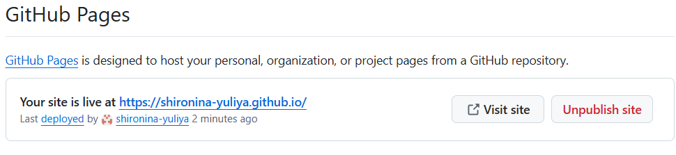

Этот сайт я подарила себе на Новый год
Выбираем хостинг и домен
Появилась у меня идея создать собственный сайт-визитку, на котором можно было бы рассказать о своей работе, не будучи ограниченной форматами и правилами соцсетей. Кроме того, сайт можно продвигать в поиске, что потенциально увеличит охват аудитории и количество работодателей/клиентов.
Чтобы определиться с понятием бесплатности, надо сначала разобраться, из чего складывается цена. Она включает стоимость хостинга (данные и картинки) и домена (.рф, .ru, .com и др.). Если брать домен, то получится красивее, например, shironina.ru. Но домены бесплатными не бывают.
Теперь обсудим бесплатные хостинги. Конструкторы вроде Tilda и WordPress предлагают бесплатные шаблоны. С одной стороны, это no code платформы, то есть не требующие программирования, и сайты, сделанные на них, не надо самостоятельно добавлять в поиск. Это продукты по принципу «всё включено». А с другой… Бесплатные шаблоны лично мне показались крайне неудобными. А удобные — за плату. С их доменом, то есть бесплатно, адрес сайта будет выглядеть примерно так: shironina.tilda.ws, а Tilda к тому же добавляет на вашу страницу свой логотип. Для меня это, как если бы по вашей одежде можно было точно узнать, что же вы сегодня ели на завтрак. Или на обед. В общем, неопрятно.
Еще вариант — Github Pages. Чтобы воспользоваться этой возможностью, надо хоть немного ориентироваться в коде HTML и уметь работать на Github. Зато вы получаете возможность расправить крылья!

Ради этого стоит немного подучиться и постараться, не так ли? Домен я решила пока не брать, потому что github.io отлично смотрится в портфолио лингвиста с IT-бэкграундом.
Итак, для создания собственного сайта нам потребуется:
1. аккаунт на Github;
2. макеты страниц сайта (Figma или что-то ещё);
3. знание HTML (хотя бы немного понимать теги);
4. помощь ИИ (у меня будет DeepSeek).
Поехали!
Готовим макет
Сначала нужно продумать структуру сайта и контент для каждой страницы, найти подходящие иллюстрации и создать макеты. Хотя я сама себе заказчик в этом деле, лучше визуализировать собственные фантазии. Так и опечатки быстрее находятся и удаётся добиться лучшей структуры контента.
Теперь экспортируем полностью готовые страницы себе на компьютер, экспортируем рисунки и сохраняем их в отдельную папку (у меня это images), записываем себе все шрифты и коды цветов (они понадобятся для CSS-файла).
HTML для каждой страницы
Для создания кода HTML я воспользовалась помощью ИИ. Составила промпт примерно такого вида: «Хочу сделать сайт на гитхаб. У сайта будет 4 страницы: главная, на которой ссылки на 3 другие по стрелочкам. Я буду загружать изображения страниц по одному. Напиши html каждой страницы в едином стиле. Какая еще информация тебе нужна?» ИИ может задать уточняющие вопросы, например, что поместить в шапке или футере, а может запросить CSS или предложить собственный шаблон. При загрузке каждой страницы можно дать дополнительное описание, например, такое: по первой стрелке на главной странице должен быть переход на страницу с двумя изображениями. Природа ИИ вероятностная, то есть хз, что он вам предложит. В моём случае ИИ предложил собственные стили, которые мне понравились, а также догадался сделать ссылки и контакты кликабельными. Дополнительно я попросила ИИ написать код для CSS файла на основе предложенных им стилей и проверить правильность HTML-кода для такого CSS-файла. Если для вас принципиально придерживаться макета, то инструктируйте свой ИИ следовать вашим стилям.
Далее копируем код каждой страницы и в текстовом редакторе (у меня Notepad++) сохраняем файл с расширением .html (Файл —> Сохранить как —> Имя файла: name.html [расширение вводится вручную] —> Тип файла: All Types).
Сразу же можно проверить, что получилось: кликнуть по сохранённому файлу — и страница раскроется в браузере.
Заливаем на Github
В своём аккаунте создаем публичный репозиторий, называем его username.github.io, чтобы ваш сайт оказался в корне и адрес сайта выглядел как username.github.io. Нажимаем Rename два раза (первый раз система проверяет, есть ли другой репозиторий с таким именем, а второй раз переименовывает, если имя свободно). Для названия сайта на Github можно использовать только username вашего аккаунта. Издержки бесплатности. Поэтому, если вы хохмы ради зарегистрировались как pingvin, а теперь позиционируете себя как серьёзного специалиста, то создайте себе другой аккаунт.
Переходим в репозиторий для сайта, нажимаем Add files и скачиваем папку с изображениями. Снова Add files — и css-файл. Add files — и одновременно перетаскиваем все HTML-файлы страниц. Есть и другие способы. Я сделала так. Вы делайте, как вам удобнее.
Переходим на вкладку Settings —> Pages —> Build and deployment —> Branch: main, root, кнопка Save.
Вверху видим: Your site is live at https://username.github.io. Переходим и тестируем.
На что обращаем внимание, гуляя по своему сайту? Надо хотя бы перейти по всем кнопкам и стрелкам. Посмотреть, не потерялся ли какой-то блок информации. Единообразно ли оформление. У меня, например, не отобразились иллюстрации, была не кликабельной одна ссылка, потерялись несколько интересующих меня тематик для копирайтинга.
Исправляем опечатки и неточности
Опечатки в тексте исправить проще простого: зашли в HTML-файл нужной страницы, нажали Edite (карандаш вверху справа), нашли текст и просто переписали его. Далее кнопка Commit changes, прописали суть внесённых изменений и сохранили их.
Изображения не отобразились, потому что в папке они были в одном формате, а в коде HTML был указан другой формат. Просто поменяла расширение у файлов изображений, и всё заработало.
Если есть хотя бы небольшой навык чтения тегов, можно добавить блоки по аналогии с имеющимися или сделать ссылку кликабельной. Находим блок, который нам нравится, и копируем его в то место, где хотим его видеть, меняя текст по смыслу. Так я сделала нужную ссылку кликабельной и добавила потерявшиеся тематики. Конечно, можно с этим вопросом обратиться к ИИ. Но где гарантия, что он снова что-нибудь не потеряет? Всегда надо помнить, что ИИ — просто инструмент, который нередко ошибается.
Снова тестируем, перечитываем и проверяем. Просим друзей зайти на сайт и высказать своё честное мнение. И думаем, думаем, как будет развиваться ваш сайт, что ещё прикрутить, какие темы затронуть и т. д.
Добавляем сайт в поиск Google и Яндекс
Уже сейчас сайт можно добавить в портфолио. Но тогда пользы от него будет не больше, чем от слайдов Figma. Сайт должен находиться в поиске, расширяя тем самым охват. Можно подождать, когда поисковые системы сами доберутся до сайта и проиндексируют его, а можно помочь им сделать это быстрее. Это же в наших интересах? Тогда ускорим процесс.
Создаём два файла опять же с помощью ИИ — sitemap.xml и robots.txt — и помещаем их в корень сайта. Они не обязательны, но желательны: первый помогает поисковым системам перемещаться по страницам, а второй позволяет скрыть от посторонних глаз служебные папки, если они есть. Добавьте описание структуры вашего сайта в промпт, и ИИ сгенерирует код. Вам нужно будет просто скопировать его, сохранить в правильном формате в текстовом редакторе и добавить в папку на Github к другим файлам сайта.
Теперь заведем дружбу с поисковыми системами. Переходим в Google Search Console https://search.google.com/search-console и выполняем предложенные шаги. Нужно подтвердить, что сайт принадлежит именно вам. Сделать это можно несколькими способами: загрузить предлагаемый HTML-файл и разместить его в папке с другими файлами сайта или вставить в код метатег. После этого открывается страница, на которой находится вкладка «Файлы Sitemap». Переходим на нее и загружаем url своего файла sitemap.xml. Информация о ходе индексации находится ниже.

Аналогичные шаги проделываем для Яндекса https://webmaster.yandex.ru/welcome/ .
Теперь остаётся только ждать.
Аналитика
Чтобы продвигать свой сайт, необходимо понимать свою аудиторию, а для этого нужна информация о ней. Google Analytics 4 (это лишь один из вариантов, можно поискать и другие) собирает данные о посетителях вашего сайта и предоставляет их в виде аналитического дашборда. Ресурс бесплатный, а прикрутить его к своему сайту несложно. Всё написано по-русски и понятно.
Создаём аккаунт на https://analytics.google.com/. Проходим необходимы шаги: вводим URL, даём краткую информацию о местоположении и размере своего бизнеса, виде деятельности и целях. Всё, аккаунт готов. Жмём на WEB и создаём поток для своего сайта.

Далее получаем тег отслеживания, содержащий ID вашего сайта. Ресурс предлагает удобно скопировать необходимый код и рассказывает, куда его вставить: в файл главной страницы после
. Готово. Google обещает, что всё заработает не позднее, чем через 48 часов. У меня уже на следующий день в дашборде появились первые данные: сколько посетителей было на сайте, из какой страны, какие страницы были просмотрены и т. д. Конечно же, можно настроить показатели и оповещения под себя.Заключение
Вот и всё. Особых сложностей в создании собственного бесплатного сайта нет. Конечно, нужны некоторые навыки в изготовлении макетов страниц, чтении кода HTML и составлении ясных промптов для ИИ. Но, немного потрудившись и подучившись, можно не только обзавестись «песочницей» для экспериментов, но и вывести продвижение своих услуг на новый уровень.